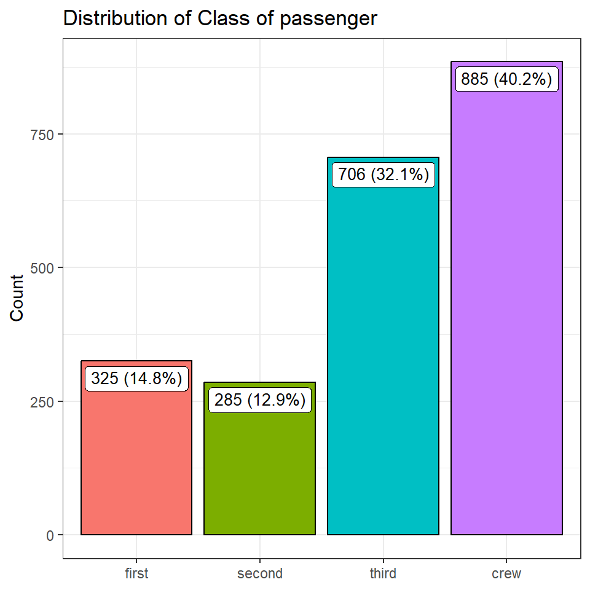
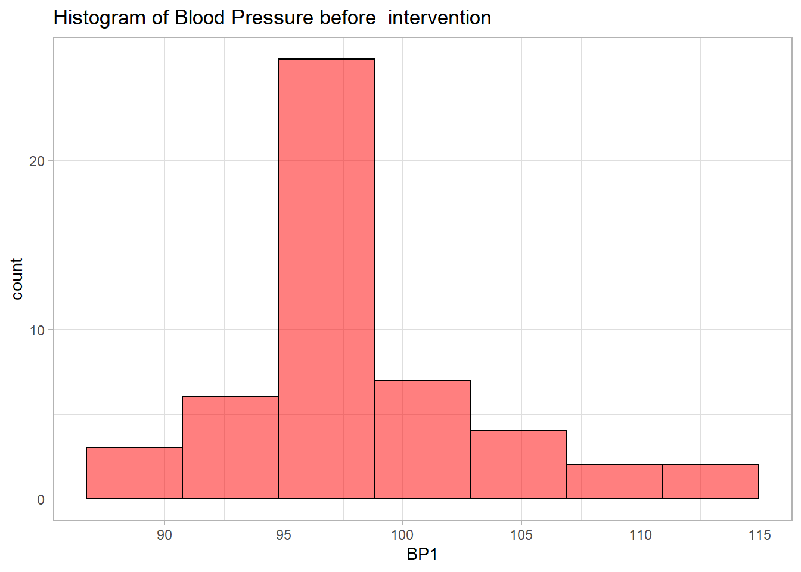
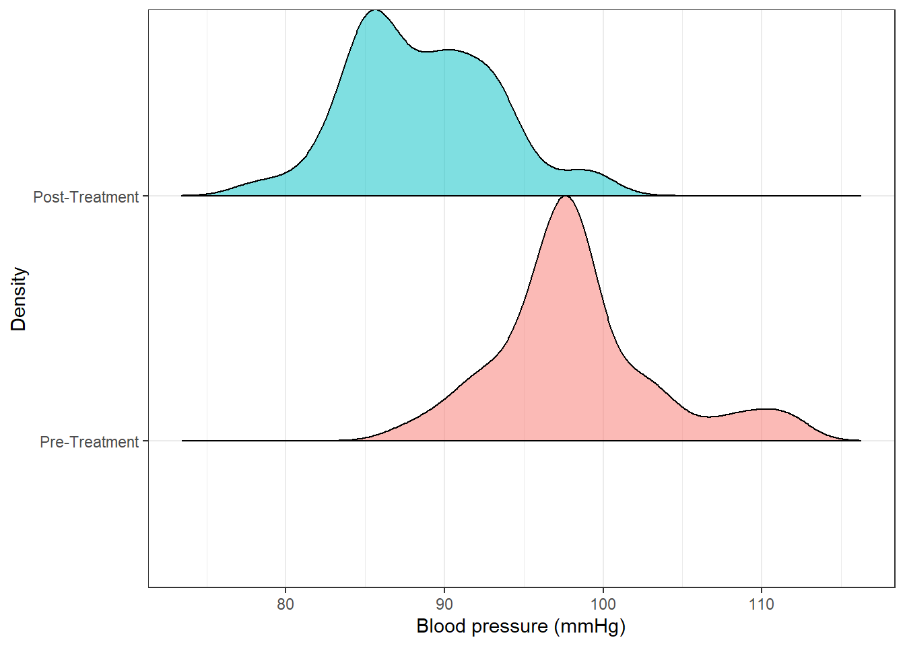

7 Descriptive Statistics and graphs
7.1 Categorical Variable
For this section we use the Titanic data set
titanic2 <-
haven::read_dta("titanic2.dta") %>%
mutate(sex = haven::as_factor(sex),
died = haven::as_factor(died),
age = haven::as_factor(age),
class = haven::as_factor(class)) %>%
haven::zap_labels()
titanic2
# A tibble: 2,201 × 4
class age sex died
<fct> <fct> <fct> <fct>
1 first adult male No
2 first adult male No
3 first adult male No
4 first adult male No
5 first adult male No
6 first adult male No
7 first adult male No
8 first adult male No
9 first adult male No
10 first adult male No
# ℹ 2,191 more rows
titanic2 %>% summarytools::dfSummary(graph.col = F)
Data Frame Summary
titanic2
Dimensions: 2201 x 4
Duplicates: 2177
----------------------------------------------------------------------------------------------------
No Variable Label Stats / Values Freqs (% of Valid) Valid Missing
---- ---------- ------------------------- ---------------- -------------------- ---------- ---------
1 class Passenger's cabin class 1. first 325 (14.8%) 2201 0
[factor] 2. second 285 (12.9%) (100.0%) (0.0%)
3. third 706 (32.1%)
4. crew 885 (40.2%)
2 age Age group 1. child 109 ( 5.0%) 2201 0
[factor] 2. adult 2092 (95.0%) (100.0%) (0.0%)
3 sex Sex of passenger 1. female 470 (21.4%) 2201 0
[factor] 2. male 1731 (78.6%) (100.0%) (0.0%)
4 died Died at sea 1. No 711 (32.3%) 2201 0
[factor] 2. Yes 1490 (67.7%) (100.0%) (0.0%)
----------------------------------------------------------------------------------------------------7.1.1 Single Caregorical Variable
7.1.1.1 Frequencies & Proportions
titanic2 %$% epiDisplay::tab1(class, graph = FALSE)
class :
Frequency Percent Cum. percent
first 325 14.8 14.8
second 285 12.9 27.7
third 706 32.1 59.8
crew 885 40.2 100.0
Total 2201 100.0 100.07.1.1.2 Graph - Barchart
We first summarize the data
bar_data <-
titanic2 %>%
drop_na(class) %>%
count(class) %>%
mutate(perc = `n` / sum(`n`)) %>%
arrange(perc) %>%
mutate(labels = paste(n, " (", scales::percent(perc), ")", sep=""))
bar_data
# A tibble: 4 × 4
class n perc labels
<fct> <int> <dbl> <chr>
1 second 285 0.129 285 (12.9%)
2 first 325 0.148 325 (14.8%)
3 third 706 0.321 706 (32.1%)
4 crew 885 0.402 885 (40.2%)And the plot the barplot
bar_data %>%
ggplot() +
geom_bar(stat = "identity",
aes(y = n, x = class, fill = class),
col = "black",
show.legend = F) +
geom_label(aes(y = n, label = labels, x = class),
vjust = 1.2,
show.legend = FALSE, size=3.5) +
labs(x = NULL,
y = "Count",
title = "Distribution of Class of passenger") +
theme_bw()
7.1.1.3 Pie Chart
To do this we use the previously summarized data. Then we draw a customised Pie Chart
bar_data %>%
ggplot(aes(x = "", y = perc, fill = class)) +
geom_col() +
geom_label(aes(label = labels),
position = position_stack(vjust = 0.5),
show.legend = FALSE, size =3) +
coord_polar(theta = "y", start=0) +
labs(title = "Distribution of Blood Groups of study participants",
fill = "Blood Group") +
theme_void()
7.1.2 Two categorical Variables
7.1.2.1 Frequencies & Proportions
titanic2 %$%
gmodels::CrossTable(sex, died, prop.c=F, prop.r=F, prop.t=F, prop.chisq = F)
Cell Contents
|-------------------------|
| N |
|-------------------------|
Total Observations in Table: 2201
| died
sex | No | Yes | Row Total |
-------------|-----------|-----------|-----------|
female | 344 | 126 | 470 |
-------------|-----------|-----------|-----------|
male | 367 | 1364 | 1731 |
-------------|-----------|-----------|-----------|
Column Total | 711 | 1490 | 2201 |
-------------|-----------|-----------|-----------|
7.1.2.2 Row percentages
titanic2 %$%
gmodels::CrossTable(sex, died, prop.c=F, prop.r=T, prop.t=F, prop.chisq = F)
Cell Contents
|-------------------------|
| N |
| N / Row Total |
|-------------------------|
Total Observations in Table: 2201
| died
sex | No | Yes | Row Total |
-------------|-----------|-----------|-----------|
female | 344 | 126 | 470 |
| 0.732 | 0.268 | 0.214 |
-------------|-----------|-----------|-----------|
male | 367 | 1364 | 1731 |
| 0.212 | 0.788 | 0.786 |
-------------|-----------|-----------|-----------|
Column Total | 711 | 1490 | 2201 |
-------------|-----------|-----------|-----------|
7.1.2.3 Column percentages
titanic2 %$%
gmodels::CrossTable(sex, died, prop.c=T, prop.r=F, prop.t=F, prop.chisq = F)
Cell Contents
|-------------------------|
| N |
| N / Col Total |
|-------------------------|
Total Observations in Table: 2201
| died
sex | No | Yes | Row Total |
-------------|-----------|-----------|-----------|
female | 344 | 126 | 470 |
| 0.484 | 0.085 | |
-------------|-----------|-----------|-----------|
male | 367 | 1364 | 1731 |
| 0.516 | 0.915 | |
-------------|-----------|-----------|-----------|
Column Total | 711 | 1490 | 2201 |
| 0.323 | 0.677 | |
-------------|-----------|-----------|-----------|
7.1.2.4 Table Total Percentages
titanic2 %$%
gmodels::CrossTable(sex, died, prop.c=F, prop.r=F, prop.t=T, prop.chisq = F)
Cell Contents
|-------------------------|
| N |
| N / Table Total |
|-------------------------|
Total Observations in Table: 2201
| died
sex | No | Yes | Row Total |
-------------|-----------|-----------|-----------|
female | 344 | 126 | 470 |
| 0.156 | 0.057 | |
-------------|-----------|-----------|-----------|
male | 367 | 1364 | 1731 |
| 0.167 | 0.620 | |
-------------|-----------|-----------|-----------|
Column Total | 711 | 1490 | 2201 |
-------------|-----------|-----------|-----------|
7.2 Continuous variables
For this section we will use the NewDrug_clean.dta dataset
newdrug <-
haven::read_dta("NewDrug_clean.dta") %>%
mutate(sex = haven::as_factor(sex), treat = haven::as_factor(treat)) %>%
haven::zap_labels()
newdrug
# A tibble: 50 × 7
id treat age sex bp1 bp2 bpdiff
<chr> <fct> <dbl> <fct> <dbl> <dbl> <dbl>
1 C1 Control 63 F 97.4 93.1 4.30
2 C2 Control 56 F 97.2 92.4 4.80
3 C6 Control 62 F 103. 99.7 3.70
4 C7 Control 61 F 90.1 88.4 1.70
5 C9 Control 73 F 96.4 91.1 5.30
6 C10 Control 57 F 98.6 90.5 8.10
7 C13 Control 61 F 97.4 93.8 3.60
8 C14 Control 66 F 97.4 92.6 4.80
9 A18 Control 51 F 92.2 86.2 6
10 A20 Control 65 F 96.9 90.4 6.5
# ℹ 40 more rows
newdrug %>%
summarytools::dfSummary(labels.col = F)
Data Frame Summary
newdrug
Label: Newdrug Treatment Trial
Dimensions: 50 x 7
Duplicates: 0
--------------------------------------------------------------------------------------------------------
No Variable Stats / Values Freqs (% of Valid) Graph Valid Missing
---- ------------- ------------------------ -------------------- ------------------ ---------- ---------
1 id 1. A18 1 ( 2.0%) 50 0
[character] 2. A19 1 ( 2.0%) (100.0%) (0.0%)
3. A20 1 ( 2.0%)
4. A21 1 ( 2.0%)
5. A22 1 ( 2.0%)
6. C1 1 ( 2.0%)
7. C10 1 ( 2.0%)
8. C11 1 ( 2.0%)
9. C12 1 ( 2.0%)
10. C13 1 ( 2.0%)
[ 40 others ] 40 (80.0%) IIIIIIIIIIIIIIII
2 treat 1. Control 22 (44.0%) IIIIIIII 50 0
[factor] 2. Newdrug 28 (56.0%) IIIIIIIIIII (100.0%) (0.0%)
3 age Mean (sd) : 61.5 (6.5) 22 distinct values : 50 0
[numeric] min < med < max: : (100.0%) (0.0%)
45 < 63 < 75 . :
IQR (CV) : 7.8 (0.1) : : :
: . : : : .
4 sex 1. F 26 (52.0%) IIIIIIIIII 50 0
[factor] 2. M 24 (48.0%) IIIIIIIII (100.0%) (0.0%)
5 bp1 Mean (sd) : 98.3 (5.2) 39 distinct values : 50 0
[numeric] min < med < max: : (100.0%) (0.0%)
87.5 < 97.7 < 111.7 :
IQR (CV) : 3.8 (0.1) . :
. : : : . .
6 bp2 Mean (sd) : 88.6 (4.6) 40 distinct values : 50 0
[numeric] min < med < max: : : (100.0%) (0.0%)
78 < 88.2 < 99.7 . : :
IQR (CV) : 6.9 (0.1) : : :
: : : :
7 bpdiff Mean (sd) : 9.7 (6.2) 46 distinct values : : : 50 0
[numeric] min < med < max: : : : (100.0%) (0.0%)
0.5 < 8.2 < 26.3 : : :
IQR (CV) : 8.9 (0.6) : : : .
: : : : : .
--------------------------------------------------------------------------------------------------------7.2.1 Single continuous variable
7.2.1.1 Measures of Central tendency & Dispersion
These include mean and median and displayed below
newdrug %>%
summarise(mean.bp1 = mean(bp1), median.bp1 = median(bp1),
sd.bp1 = sd(bp1), min.bp1 = min(bp1),
max.bp1 = max(bp1), iqr = IQR(bp1))
# A tibble: 1 × 6
mean.bp1 median.bp1 sd.bp1 min.bp1 max.bp1 iqr
<dbl> <dbl> <dbl> <dbl> <dbl> <dbl>
1 98.3 97.7 5.17 87.5 112. 3.78Alternatively
newdrug %$%
psych::describe(bp1)
vars n mean sd median trimmed mad min max range
X1 1 50 98.3 5.17 97.7 97.89 2.97 87.5 111.7 24.2
skew kurtosis se
X1 0.7 0.62 0.73And to show the interquartile range we do the following.
newdrug %$%
psych::describe(bp1, IQR = TRUE,quant = c(.25, .75))
vars n mean sd median trimmed mad min max range
1 1 50 98.3 5.17 97.7 97.89 2.97 87.5 111.7 24.2
skew kurtosis se IQR Q0.25 Q0.75
1 0.7 0.62 0.73 3.78 95.62 99.47.2.1.2 Graphs - Histogram
newdrug %>%
ggplot(aes(x = bp1)) +
geom_histogram(bins = 7, col="black", alpha = .5, fill = "red") +
labs(title = "Histogram of Blood Pressure before intervention",
x= "BP1")+
theme_light()
7.2.1.3 Graphs - Boxplot and violin plot
newdrug %>%
ggplot(aes(y = bp1)) +
geom_boxplot(col="black",
alpha = .2,
fill = "blue",
outlier.fill = "black",
outlier.shape = 22) +
labs(title = "Boxplot of Blood Pressure before intervention",
y = "BP1")+
theme_light()
7.2.1.4 Graphs - Density plot
newdrug %>%
ggplot(aes(y = bp1)) +
geom_density(col="black", fill = "yellow", alpha=.6) +
labs(title = "Density Plot of Blood Pressure before intervention",
y = "Blood Pressure before intervention")+
coord_flip() +
theme_light()
7.2.1.5 Graphs - Cumulative Frequency plot
newdrug %>%
group_by(bp1) %>%
summarize(n = n()) %>%
ungroup() %>%
mutate(cum = cumsum(n)/sum(n)*100) %>%
ggplot(aes(y = cum, x = bp1)) +
geom_line(col=3, size=1.2)+
labs(title = "Cumulative Frequency Plot of Blood Pressure before intervention",
x = "BP1",
y = "Cumulative Frequency")+
theme_light()
Warning: Using `size` aesthetic for lines was deprecated in ggplot2
3.4.0.
ℹ Please use `linewidth` instead.
This warning is displayed once every 8 hours.
Call `lifecycle::last_lifecycle_warnings()` to see where
this warning was generated.
7.2.2 Multiple Continuous variables
7.2.2.1 Measures of Central tendency & Dispersion
newdrug %>%
select(where(is.numeric)) %>%
psych::describe()
vars n mean sd median trimmed mad min max
age 1 50 61.48 6.51 63.00 61.98 4.45 45.0 75.0
bp1 2 50 98.30 5.17 97.70 97.89 2.97 87.5 111.7
bp2 3 50 88.60 4.56 88.15 88.46 4.52 78.0 99.7
bpdiff 4 50 9.70 6.20 8.25 8.95 5.49 0.5 26.3
range skew kurtosis se
age 30.0 -0.60 0.16 0.92
bp1 24.2 0.70 0.62 0.73
bp2 21.7 0.25 -0.24 0.65
bpdiff 25.8 0.93 0.24 0.88To illustrate graphing multiple continuous variables we use the 2 bp variables
bps <-
newdrug %>%
select(bp1, bp2) %>%
pivot_longer(cols = c(bp1, bp2),names_to = "measure", values_to = "bp") %>%
mutate(measure = fct_recode(measure,
"Pre-Treatment" = "bp1",
"Post-Treatment" = "bp2"))bps %>%
ggplot(aes(y = measure, x = bp, fill = measure)) +
ggridges::geom_density_ridges2( col="black", alpha = .5, scale=1,
show.legend = F) +
labs(x = "Blood pressure (mmHg)",
y = "Density",
fill = "Blood Pressure") +
theme_bw()
Picking joint bandwidth of 1.52
bps %>%
ggplot(aes(y = measure, x = bp, fill = measure))+
geom_boxplot(show.legend = FALSE) +
labs(y = NULL,
x = "Blood Pressure",
fill = "Blood Pressure") +
coord_flip()+
theme_light() 
bps %>%
ggplot(aes(y = measure, x = bp, fill = measure))+
geom_violin(show.legend = FALSE) +
coord_flip()+
theme_light() 
7.3 Continuous by single categorical variable
7.3.1 Summary
We do this with one variable.
newdrug %>%
group_by(treat) %>%
summarize(mean.bp1 = mean(bp1),
sd.bp1 = sd(bp1),
var.bp1 = var(bp1),
se.mean.bp1 = sd(bp1)/sqrt(n()),
median.bp1 = median(bp1),
min.bp1 = min(bp1),
max.bp1 = max(bp1)) %>%
ungroup()
# A tibble: 2 × 8
treat mean.bp1 sd.bp1 var.bp1 se.mean.bp1 median.bp1
<fct> <dbl> <dbl> <dbl> <dbl> <dbl>
1 Control 97.1 3.56 12.7 0.760 97.4
2 Newdrug 99.2 6.05 36.6 1.14 98.2
# ℹ 2 more variables: min.bp1 <dbl>, max.bp1 <dbl>Alternatively we can use
newdrug %>%
select(where(is.numeric), treat) %>%
psych::describeBy(group = "treat")
Descriptive statistics by group
treat: Control
vars n mean sd median trimmed mad min max
age 1 22 62.09 6.57 63.0 62.17 5.19 48.0 75.0
bp1 2 22 97.13 3.56 97.4 97.28 2.59 89.8 103.4
bp2 3 22 92.19 3.25 91.9 91.94 2.52 86.2 99.7
bpdiff 4 22 4.95 2.25 4.8 4.86 1.70 0.5 11.1
treat* 5 22 1.00 0.00 1.0 1.00 0.00 1.0 1.0
range skew kurtosis se
age 27.0 -0.17 -0.37 1.40
bp1 13.6 -0.33 -0.39 0.76
bp2 13.5 0.66 0.03 0.69
bpdiff 10.6 0.56 0.82 0.48
treat* 0.0 NaN NaN 0.00
---------------------------------------------
treat: Newdrug
vars n mean sd median trimmed mad min max
age 1 28 61.00 6.54 62.50 61.58 5.19 45.0 70.0
bp1 2 28 99.22 6.05 98.25 98.99 4.15 87.5 111.7
bp2 3 28 85.78 3.29 85.35 85.67 2.22 78.0 94.2
bpdiff 4 28 13.44 5.73 12.45 13.17 4.37 3.8 26.3
treat* 5 28 2.00 0.00 2.00 2.00 0.00 2.0 2.0
range skew kurtosis se
age 25.0 -0.92 0.14 1.24
bp1 24.2 0.54 -0.37 1.14
bp2 16.2 0.38 0.96 0.62
bpdiff 22.5 0.65 -0.25 1.08
treat* 0.0 NaN NaN 0.007.4 Continuous by multiple categorical variables
7.4.1 Summary
This csn be done as below.
newdrug %>%
group_by(treat, sex) %>%
summarize(mean.bp1 = mean(bp1),
sd.bp1 = sd(bp1),
var.bp1 = var(bp1),
se.mean.bp1 = sd(bp1)/sqrt(n()),
median.bp1 = median(bp1),
min.bp1 = min(bp1),
max.bp1 = max(bp1)) %>%
ungroup()
`summarise()` has grouped output by 'treat'. You can
override using the `.groups` argument.
# A tibble: 4 × 9
treat sex mean.bp1 sd.bp1 var.bp1 se.mean.bp1 median.bp1
<fct> <fct> <dbl> <dbl> <dbl> <dbl> <dbl>
1 Cont… F 97.2 3.82 14.6 1.15 97.4
2 Cont… M 97.0 3.47 12.1 1.05 97.5
3 Newd… F 98.6 6.01 36.1 1.55 98.4
4 Newd… M 100. 6.25 39.1 1.73 98.1
# ℹ 2 more variables: min.bp1 <dbl>, max.bp1 <dbl>